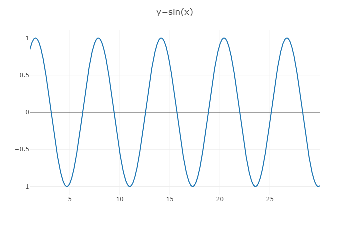
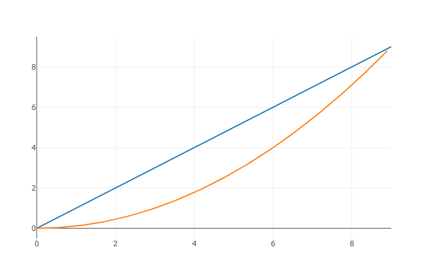
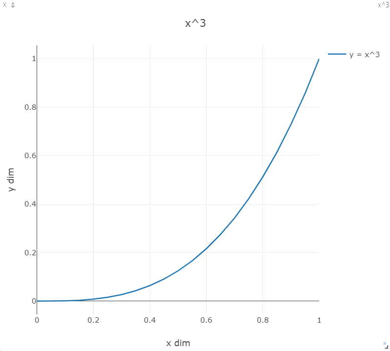
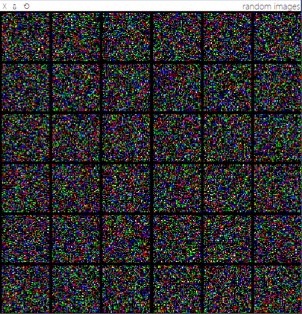
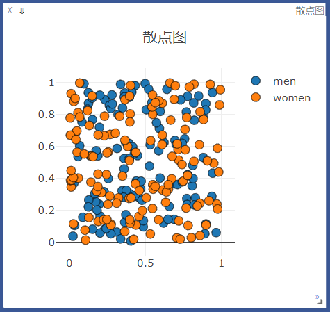
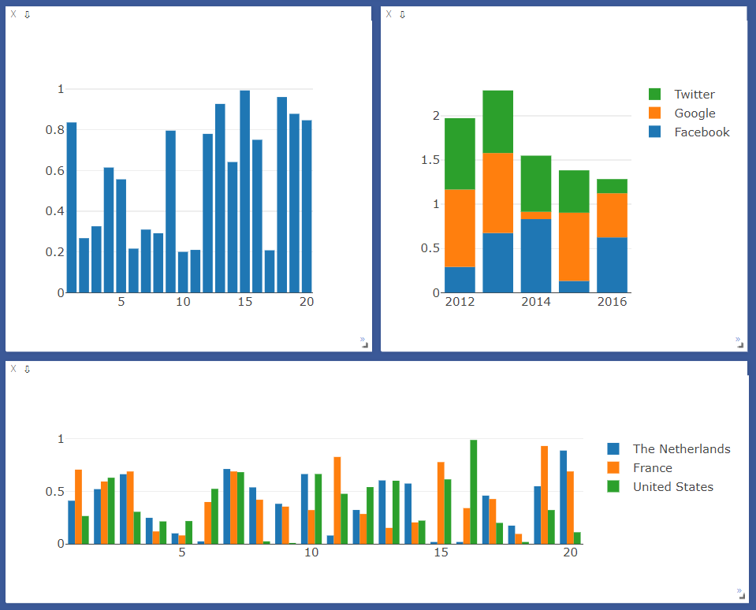
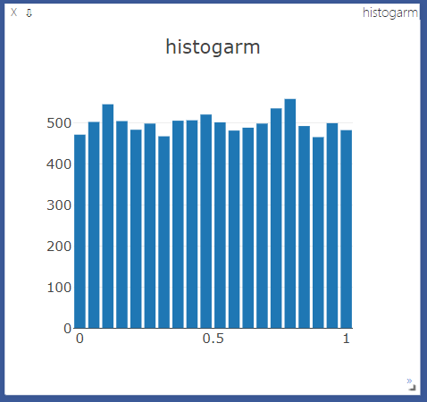
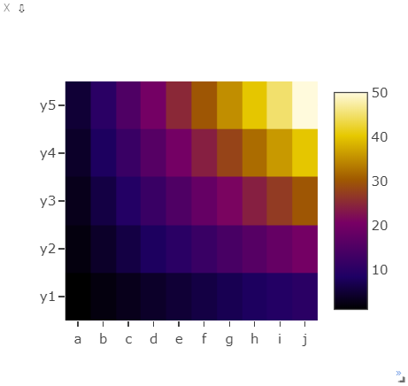
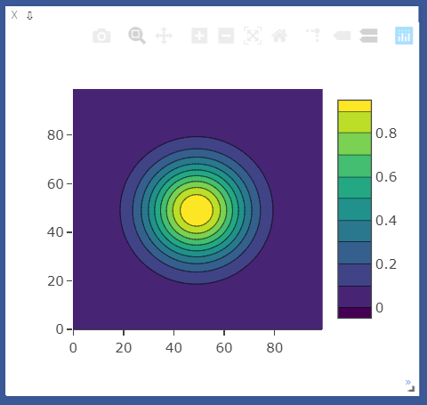
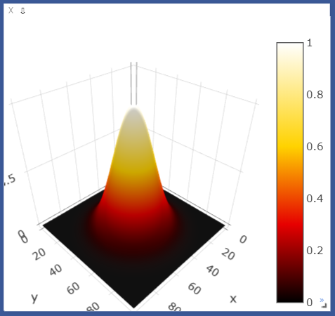

Visdom:一个灵活的可视化工具，可用来对于实时，富数据的创建，组织和共享。支持Torch和Numpy还有PyTorch。
visdom 可以实现远程数据的可视化，对科学实验有很大帮助。我们可以远程的发送图片和数据，并进行在ui界面显示出来，检查实验结果，或者debug
安装与启动
安装
$ pip install visdom
启动
$ python -m visdom.server
接口
大多数接口可以输入一个tensor(保存数据），和一个可选的tensor Y（标签或者时间戳）, 另外都可以指定窗口win,和汇出图添加到那个env上，另外options输入可以修改默认的绘图属性，输入参数基于表中键的匹配，有一些通用的options可以选择,下面列出了通用的可视化options(除了plot.image和plot.text外）
opts.title: figure titleopts.width: figure widthopts.height: figure heightopts.showlegend: show legend (trueorfalse)opts.xtype: type of x-axis ('linear'or'log')opts.xlabel: label of x-axisopts.xtick: show ticks on x-axis (boolean)opts.xtickmin: first tick on x-axis (number)opts.xtickmax: last tick on x-axis (number)opts.xtickvals: locations of ticks on x-axis (tableofnumbers)opts.xticklabels: ticks labels on x-axis (tableofstrings)opts.xtickstep: distances between ticks on x-axis (number)opts.ytype: type of y-axis ('linear'or'log')opts.ylabel: label of y-axisopts.ytick: show ticks on y-axis (boolean)opts.ytickmin: first tick on y-axis (number)opts.ytickmax: last tick on y-axis (number)opts.ytickvals: locations of ticks on y-axis (tableofnumbers)opts.yticklabels: ticks labels on y-axis (tableofstrings)opts.ytickstep: distances between ticks on y-axis (number)opts.marginleft: left margin (in pixels)opts.marginright: right margin (in pixels)opts.margintop: top margin (in pixels)opts.marginbottom: bottom margin (in pixels)
使用
导入
import torch
import numpy as np
from visdom import Visdom
# 新建一个连接客户端
# 指定env = u'test1'，默认端口为8097，host是‘localhost'
vis = visdom.Visdom(env="test1", use_incoming_socket=False)
assert vis.check_connection()
曲线 vis.line
# win窗口名为 'sinx', 如果不指定回自动新分配一个pane，两次使用同一个win将覆盖
# 标题为 'y=sin(x)'
# visdom 支持pytorch的tensor 和 numpy的ndarray类型， 但不支持python的int,float等原生类型，需要转换成ndarray或者tensor
x = torch.arange(1, 30, 0.01)
y = torch.sin(x)
vis.line(X=x, Y=y, win='sinx', opts={'title': 'y=sin(x)'})

追加数据
# append 追加数据
# y = x
# 窗口名: polynomial
for i in range(0, 10):
x = torch.Tensor([i]) # 要转成tensor，Visdom不支持python原生的int,float等
y = x
vis.line(X=x, Y=y, win='polynomial', update='append' if i>0 else None)
在同一附图新增曲线，而不覆盖
# update Trace 新增一条线，而不覆盖
# y= (x**2)/9
# 窗口名: polynomial
x = torch.arange(0, 9, 0.1)
y = (x ** 2) / 9
vis.line(X=x, Y=y, win='polynomial', name='this is a new Trace', update='new')

附带label和对轴的控制
# y = x**3
x = torch.arange(0, 2, 0.05)
y = x**3
vis.line(
X = x,
Y = y,
win = 'x3',
opts = dict(
title = 'x^3',
legend = ['y = x^3'],
xlabel = 'x dim',
ylabel = 'y dim',
xtickmin = 0,
xtickmax = 1,
ytickmin = 0,
ytickmax = 1
)
)

图像 vis.image / vis.images
# 图像 vis.image / vis.images
# image的画图功能可分为如下两类：
# image接收一个二维或三维向量，H x W 或 3 x H x W，前者是黑白图像，后者是彩色图像。
# images接收一个四维向量 N x C x H x W ，C可以是1或3，分别代表黑白和彩色图像。可实现类似torchvision中make_grid的功能，将多张图片拼接在一起。images也可以接收一个二维或三维的向量，此时它所实现的功能与image一致。
# 可视化一个随机的黑白图片
vis.image(torch.randn(64, 64).numpy())
# 可视化一个随机的彩色图片
vis.image(torch.randn(3, 64, 64).numpy(), win='random2')
# 可视化36张随机彩色图片，每行6张
vis.images(torch.randn(36, 3, 64, 64).numpy(), nrow=6, win='random3', opts={'title': 'random images'})

import numpy as np
import cv2 as cv
# visdom 显示图像
img = cv.imread('e:/image/avator.jpg') # H x W x C (BGR)
img = cv.cvtColor(img, cv.COLOR_BGR2RGB) # H x W x C (RGB)
img = np.transpose(img, [2, 0, 1]) # C x H x H
vis.image(img, win='image_example')
文本 vis.text
# 文本 vis.text
# 支持所有html标签
vis.text(u''' <h1> Hello Visdom </h1> <br> 测试 ''',
win='visdom',
opts={'title': 'visdom简介'}
)

散点图（2D/3D） vis.scatter
# 散点图 vis.scatter
x = torch.rand(255, 2) # [0, 1) 均匀分布
y = (torch.randn(255) > 0) + 1 # 标准正太分布
vis.scatter(X=x, Y=y, win='scatter', opts={'title': '散点图', 'maskersize':10, 'legend':['men', 'women']})

条形图 vis.bar
# 条形图 bar
vis.bar(X=np.random.rand(20))
vis.bar(
X = np.abs(np.random.rand(5, 3)),
opts = dict(
stacked = True,
legend = ['Facebook', 'Google', 'Twitter'],
rownames = ['2012', '2013', '2014', '2015', '2016']
)
)
vis.bar(
X = np.random.rand(20, 3),
opts = dict(
stacked = False,
legend = ['The Netherlands', 'France', 'United States']
)
)

直方图 vis.histogram
# 直方图 histogram (横坐标0-1（最大值与最小值之间）， 纵坐标频数)
vis.histogram(X=np.random.rand(10000), opts=dict(numbins=20, title='histogarm'))

热程图 vis.heatmap
# heatmap
vis.heatmap(
X=np.outer(np.arange(1, 6), np.arange(1, 11)),
opts=dict(
columnnames=['a', 'b', 'c', 'd', 'e', 'f', 'g', 'h', 'i', 'j'],
rownames=['y1', 'y2', 'y3', 'y4', 'y5'],
colormap='Electric',
)
)

等值线图 vis.contour
# 等值线图 contour
x = np.tile(np.arange(1, 101), (100, 1))
y = x.transpose()
X = np.exp((((x - 50) ** 2) + ((y - 50) ** 2)) / -(20.0 ** 2))
vis.contour(X=X, opts=dict(colormap='Viridis'))

表面图 vis.surf
# 表面图 surface
vis.surf(X=X, opts=dict(colormap='Hot'))

视频 vis.video
# 视频 video
videofile = 'e:/video/001.mp4'
vis.video(videofile=videofile, opts={'width': 864, 'height':480})
保存与读取
创建时指定保存文件路径
vis = visdom.Visdom(env="test1", log_to_filename="./log/test1.log")
读取时
import visdom
visdom.Visdom().replay_log("./log/test1.log")